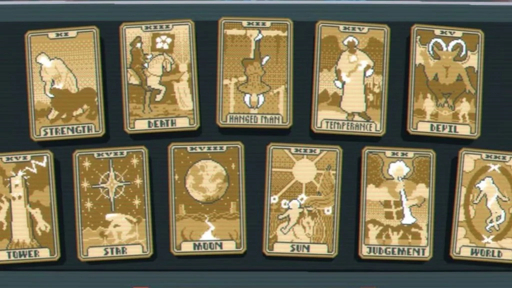

Tarot cards are the easiest way to fix your deck to your gameplan to win a Balatro run.
These are found in Arcana packs in the shop or by packs given by the Charm skip tag.
The Fool, The Magician, The High Priestess, The Empress, The Emperor, The Hierophant,
The Lovers, The Chariot, Justice, The Hermit, Wheel of Fortune, Strength, The Hanged Man,
Death, Temperance, The Devil, The Tower, The Star, The Moon, The Sun, Judgement, The World.
Before continuing, card editions can be found in Tips & Tricks.

The Fool:
The Fool creates a copy of the last used Tarot or Planet card (excluding The Fool).
The Magician:
The Magician turns up to 2 selected cards into Lucky cards.
The High Priestess:
The High Priestess creates 2 Planet cards. (You must have room in your consumable slots.
If you only have 1 slot open, you will only get 1 planet card.)
The Empress:
The Empress turns up to 2 selected cards into Mult cards.
The Emperor:
The Emporor generates 2 random Tarot cards. (Must have room.)
The Hierophant:
The Hierophant turns up to 2 selected cards into Bonus cards.
The Lovers:
The Lovers turn 1 selected card into a Wild card.
The Chariot:
The Chariot turns 1 selected card into a Steel card.
Justice:
Justice turns 1 selected card into a Glass card.
The Hermit:
The Hermit doubles your money (doubles max of $20.)
Wheel of Fortune:
The Wheel of Fortune has a 1 in 4 chance of giving a random joker an edition.
Strength:
Strength increases the rank of up to 2 selected cards. (2-3, K-A, etc.)
The Hanged Man:
The Hanged Man cuts up to 2 cards from your deck.
Death:
Death turns a selected card into another card in your deck. Pick 2 cards
drag the card you want on the right side and take the card you want to
switch onto the left side. Death will turn the left card into the card on
the right side.
Temperance:
Temperance combines the total sell values of your jokers and gives you money
equivalent to that amount. (Max of $40.)
The Devil:
The Devil turns 1 selected card into a Gold card.
The Tower:
The Tower turns 1 selected card into a Stone card.
The Star:
The Star turns up to 3 selected cards into diamond suited cards.
The Moon:
The Moon turns up to 3 selected cards into club suited cards.
The Sun:
The Sun turns up to 3 selected cards into heart suited cards.
The World:
The World turns up to 3 selected cards into spade suited cards.
Judgement:
Judgement creates 1 random joker. (Must have room.)
Now that you know what all of the Tarot cards do, you can use them to your
advantage and take control of the game!